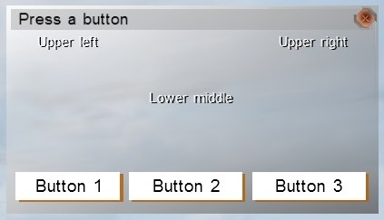

Introduced in
|
|
Version:
|
1.43
|
Description
|
|
Description:
|
Creates a window that can be configured with text, pictures, and optional buttons. It is mainly intended for hint, but can also be used in dialogs. The size of the dialog can be set, and the text can be set to scrollable, for extended text. Structured text includes the ability to have pictures and HTML-like commands for formatting text.
All parameters must be passed, enclosed in square brackets (for example, ["title","Dialog Title"]), and can (except for the first one) be passed in any order.
|
Syntax
|
|
Syntax:
|
[text, text_R_C, textrow1height, size, pos, poscenter, textsize, title, id, fadeintime, buttonX, button1size, help, exit, code] call fn_vbs_ImprovedHint
|
|
Parameters:
|
text: Array of String - Main text to display. If the array contains more than one element, then all the elements are shown as concatenated.
text_R_C: String - Any additional text to show. R and C are numbers, and indicate the row and column the text is placed in (for example, "text_1_2"). Multiple entries of this arguments (with different "R" and "C" values) can be entered. When using two rows, column 1 must be defined, even if its string is empty. Maximum: 2 rows, 6 columns.
textrow1height: Number - The negative offset from the bottom of the dialog, the second line should be placed at.
size: Array - Dialog size, represented as [width, height] - 1 = full screen, .1 = 10% of the screen.
pos: Array - An [x, y] position of the window (0 = left edge, .5 = middle of the screen). If not defined, the previous position is used.
poscenter: String - Automatically positions window in the center of the screen. Should be placed after size parameter.
textsize: Array - Additional space [width, height] to add to the text field (for example, to create scroll bars).
title: String - Dialog title, shown in the header bar.
id: String - The activateKey that has to be active, in order for hint messages to be shown.
fadeintime: Number - How long it should take (in seconds) to fade-in the dialog (default: 0).
buttonX: Array - Array of [text, code] that displays one or more buttons at the bottom of the dialog. X is a number between 1 and 6, and indicates the button number, "text" and "code" are both strings, and define the button label, and the action to perform, when pressed. Multiple entries of this arguments (with different "X" values) can be entered.
button1size: Array - An array of [x, y, w, h], only used when there is just one button, to define its position and size.
help: String - Adds a help button, if defined, which runs the code string, when clicked.
exit: String - Code to run, when the close button is clicked.
code: String - Code to run after the dialog is opened. The local variable _dialog, which returns a Boolean, indicating whether the dialog was successfully created or not, can be used in the code.
|
|
Return Value:
|
Boolean - Indicates whether dialog was successfully created or not.
|
Warning
|
|
When using functions in VBS versions older than 3.4, certain limitations and requirements should be kept in mind - the main ones being that capitalization of the function name is crucial, and that #include "\vbs2\headers\function_library.hpp" has to be included in every script that utilizes it. More Category VBS Scripting Functions.
|
Examples
|
|
Examples:
|
_hint = [
["Upper ","left"],
["text_1_3",["Upper right"]],
["text_2_1",[""]],
["text_2_2",["Lower middle"]],
["textrow1height",-.1],
["button1",["Button 1",""]],
["button2",["Button 2",""]],
["button3",["Button 3",""]],
["title","Press a button"],
["poscenter"]
] call fn_vbs_ImprovedHint; 
|
|
|
|
See also:
|
createMessageBox, warningMessage, fn vbs confirmationDialog
|
|
Multiplayer:
|
|
|
Problems:
|
|